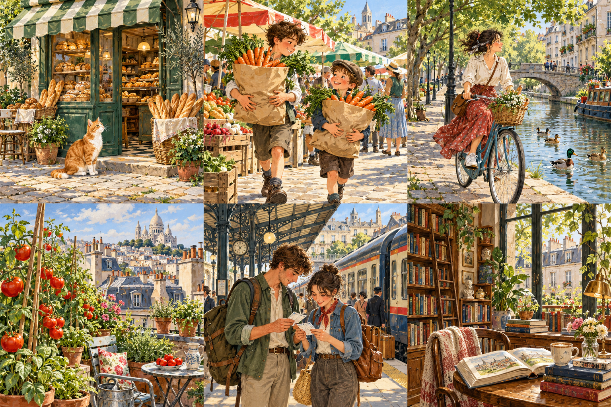

Le voyage de la sonnette
The Bicycle Bell's Journey
Lina plans a bicycle trip to the next village, but the road offers more than she expects.

Lina a réparé son vieux vélo bleu. Samedi, elle va rendre visite à son oncle dans le village voisin. La route longe un canal et traverse un petit bois. Avant de partir, elle prépare de l'eau, deux sandwiches et une carte. Elle essaie sa sonnette trois fois, juste pour le plaisir.
Show English translationHide English translation
Lina has repaired her old blue bicycle. On Saturday, she is going to visit her uncle in the next village. The road follows a canal and goes through a small wood. Before leaving, she packs some water, two sandwiches and a map. She tries her bell three times, just for fun.
Au début, tout se passe bien. Le soleil brille et Lina avance tranquillement. Près d'un pont, elle rencontre un groupe de canards au milieu du chemin. Elle sonne doucement. Les canards ne bougent pas. Un vieux monsieur lui conseille d'attendre. Ici, les canards pensent que la route est à eux.
Show English translationHide English translation
At first, everything goes well. The sun is shining and Lina rides along calmly. Near a bridge, she finds a group of ducks in the middle of the path. She rings her bell gently. The ducks do not move. An old man advises her to wait. Here, the ducks think the road belongs to them.
Après quelques minutes, les canards retournent dans l'eau. Lina continue, mais elle prend le mauvais chemin dans le bois. Bientôt, elle arrive devant une ferme. Sur sa carte, il n'y a pas de ferme. Elle descend du vélo et demande son chemin à une femme qui porte un grand panier.
Show English translationHide English translation
After a few minutes, the ducks go back into the water. Lina continues, but she takes the wrong path in the wood. Soon, she arrives at a farm. There is no farm on her map. She gets off her bicycle and asks a woman carrying a large basket for directions.
La femme lui montre un chemin entre deux champs. Il rejoint le village et passe devant un vieux moulin. Elle offre aussi une pomme à Lina. La jeune fille la remercie. Elle mange son premier sandwich près du moulin, puis elle prend une photo pour son oncle. Son petit voyage devient une vraie aventure.
Show English translationHide English translation
The woman shows her a path between two fields. It leads to the village and passes an old mill. She also offers Lina an apple. The young woman thanks her. She eats her first sandwich near the mill, then takes a photo for her uncle. Her little trip is becoming a real adventure.
Quand Lina arrive enfin, son oncle l'attend devant sa porte. Il regarde la photo et reconnaît le moulin de son enfance. Ils décident d'y retourner ensemble dimanche. Lina est contente de son erreur. Pour le retour, elle va suivre la bonne route, mais elle va prévoir du temps pour les canards.
Show English translationHide English translation
When Lina finally arrives, her uncle is waiting outside his door. He looks at the photo and recognises the mill from his childhood. They decide to go back there together on Sunday. Lina is happy about her mistake. On the way back, she is going to follow the correct route, but she is going to allow some time for the ducks.